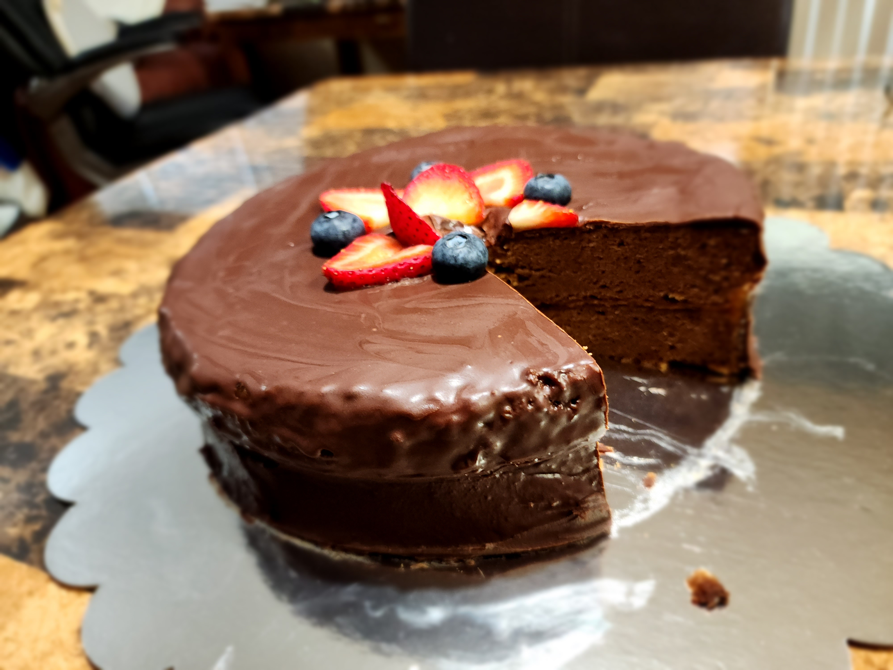

sachertorte
ingredients
- (cake) flour
- baking powder
- salt
-
large eggs
- separate egg yolks and egg whites
-
butter
- butter can be salted or unsalted
- to soften, unwrap and let it sit at room temperature for ~30 minutes until it gets dented by lightly poking
- (granulated) sugar
- vanilla extract
- semi-sweet chocolate
- apricot preserves
- corn syrup
- strawberries
- blueberries
equipment
- small microwave-safe bowl
- 9x3 inch cake pan
- parchment paper
- medium bowl
- stand mixer with wire whip attachment
- hand mixer
- oven at 350°f
- wire rack
- small bowl
- small microwave-safe bowl
- big cool-looking plate
instructions
baking
soften 1 cup butter
melt 6 ounce semi-sweet chocolate
line a 9x3 inch cake pan with parchment paper
beat the butter and 1/2 cup (granulated) sugar using the stand mixer with the wire whip attachment and cream it for ~2 minutes or until it's light and aerated
separate 8 large eggs; put the egg yolks into the stand mixer and put the egg whites in a medium-sized mixing bowl
whip the egg whites until they form soft peaks
beat in ~3 teaspoon vanilla extract until it is all combined
sift 1 cup (cake) flour, 1/2 teaspoon baking powder, and 1/4 teaspoon salt into the stand mixer
beat until all combined
beat in the semi-sweet chocolate
fold and mix the egg whites into the stand mixer bowl in thirds until the egg white isn't visible
preheat the oven to 350°f
pour batter into cake pan and spread it evenly
bake for ~45 minutes or until a toothpick stabbed into the middle comes out clean
cool in the pan for ~10 minutes
place on a cooling rack to completely cool (~8 hours)
assembling pt. 1
trim the top of the cake so it is flat
cut the cake horizontally and equally into 2 layers
spread 1/2 cup apricot preserves on top of one layer
stack the other layer on top
warm 1 cup apricot preserves and get rid of/flatten out the chunky bits
ice the top and the sides of the cake
let cake air-dry for ~1 hour
assembling pt. 2
melt 4 ounce semi-sweet chocolate and 2 ounce butter into a small bowl
mix in 1 tablespoon corn syrup
pour glaze over cake and use a small spatula to smooth it out and let it set
transfer to a cool-looking plate big enough to hold the sachertorte
decorate with strawberries and blueberries

rizz advice: ask ur partner what their favorite kind of cake is, then make it in secret for their bday (true story, i was the cake)